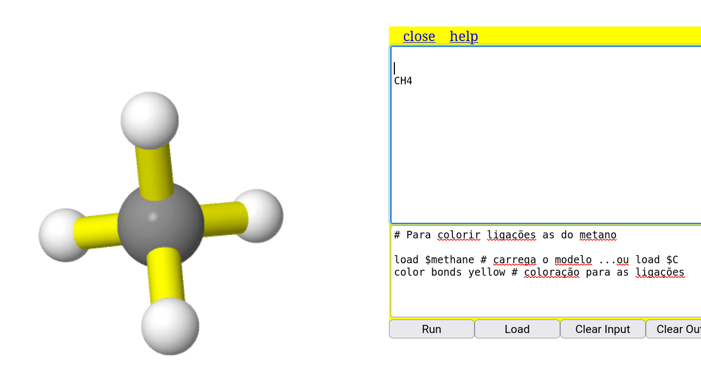
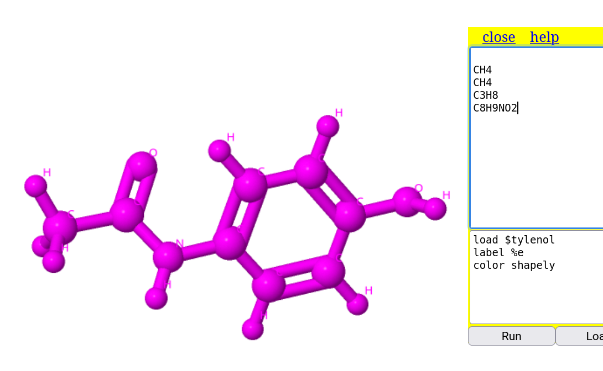
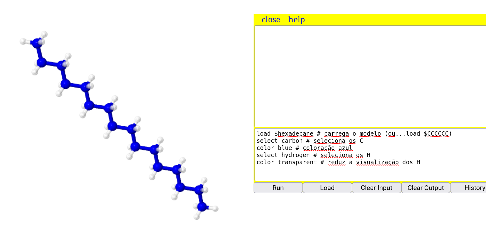

1. Átomo - basta clicar em algum no ecrã (modelo);
2. Grupo de átomos - Shift + clique botão esquerdo + arraste pra agrupar os átomos # funciona no Jmol instalado no PC7 Seleção de partes da molécula
7.1 Seleção de átomos e visualização
Por vezes faz-se interessante ou necessário chamar a atenção para partes específicas de um modelo, como um átomo, grupo de átomos, uma molécula pequena no interior de uma maior, entre outras situações. Nessa seção serão vistos alguns comandos para isso.
O Jmol foi concebido para estruturas mais complexas, como proteínas e polímeros, razão pela qual a maior parte dos comandos de seleção refiram-se a partes de proteínas e ácidos nucleicos.Contudo, pode-se selecionar átomos ou grupo desses em moléculas pequenas, também.
7.1.1 Por mouse
Usando o mouse pode-se selecionar um átomo por vez ou grupo de átomos (esse no Jmol do computador), como segue:
7.1.2 Por linha de comando
Por digitação do código consegue-se uma operação bem mais abrangente que por clique de mouse, incluindo o agrupamento de átomos ou seleção daqueles com características comuns:
select "propriedade do átomo" Essas características são listadas abaixo:
todos os átomos: all
nenhum átomo: none
solvente: solvent
água: water ou hoh
íons: ions
átomo por símbolo atômico: _N, _C, _Fe
átomo por número atômico: elemNo=7
átomo por identificação na sequência: atomNo<50
# Para biomoléculas:
proteína: protein
ácido nucleico: nucleic
DNA: dna
purina: purine
pirimidina: pyrimidine
carboidrato: carbohydrate
aminoácido: amino
# Para aminoácidos numa proteína:
abreviação de 3 letras: his, tyr, leu, etc
grandes: large
pequenos: small
ácidos: acidic
básicos: basic
polares: polar
apolares: hydrophobic
alifáticos: aliphatic
hidrofílicos: hydrophilic
aromáticos: aromatic
neutros: neutral
carregados: charged
na superfície: surface
no interior: buried
cistina: cystine
hem - grupo heme de ferroproteínas
# Para proteínas
esqueleto carbônico de resíduos de aminoácidos: backbone ou spine
cadeia lateral de resíduos de aminoácidos: sidechain
átomos distintos dos presentes nos resíduos de aminoácidos: hetero
estruturas secundárias: helix, sheet, turn7.2 E depois de selecionar átomos, o que é que eu faço ?!
Muuiiiitaaa coisa, também ! As instruções sequenciais abaixo (scripts) ilustram algumas possibilidades de se observar detalhes de um modelo molecular com o Jmol. Você pode copiar e colar no Console para observar os resultados.
# Para colorir ligações as do metano
load $methane # carrega o modelo ...ou load $C
color bonds yellow # coloração para as ligações
# Para nomear os átomos do tylenol e padronizar uma cor
load $tylenol # carrega o fármaco
label %e
color shapely # coloração única  | Aqui vale uma observação sobre a etiquetagem dos átomos (nomes de cada no ecrã). Veja que não há comentário seguindo a instrução. Isso é necessário para que o comentário não seja a própria etiquetagem, e sim o símbolo do elemento.
# Para selecionar e colorir os átomos de H
load $cyclopropane # carrega o modelo
select _H # seleciona os átomos de hidrogênio
label %e
color AlcianBlue# Para selecionar e esconder os átomos de H de um propeno
load $propene # carrega o modelo
select _H # seleciona os átomos de H
hide selected # esconde os átomos de H selecionados# Para selecionar um átomo específico no modelo e apresentar sua área acessível ao solvente (SAS)
load $urea
select atomno=2 # seleciona o carbono
label %e
isosurface sasurface # apresenta a superfície de interação com água
# Para ressaltar os carbonos de um hexadecano
load $hexadecane # carrega o modelo (ou...load $CCCCCC)
select carbon # seleciona os C
color blue # coloração azul
select hydrogen # seleciona os H
color transparent # reduz a visualização dos H
load=1crn # carrega um modelo da proteína crambina
calculate hbonds # apresenta as ligações de H presentes na estrutura
color hbonds Cyan # coloração
hbonds 0.5 # espessura da ligação de H# Superfíciel de potencial eletrostático para o fenol
load $phenol # carrega o modelo
isosurface solvent color range -0.05 0.05 map mep # gera a superfície
color isosurface translucent 0.5 # mantém a estrutura no interior